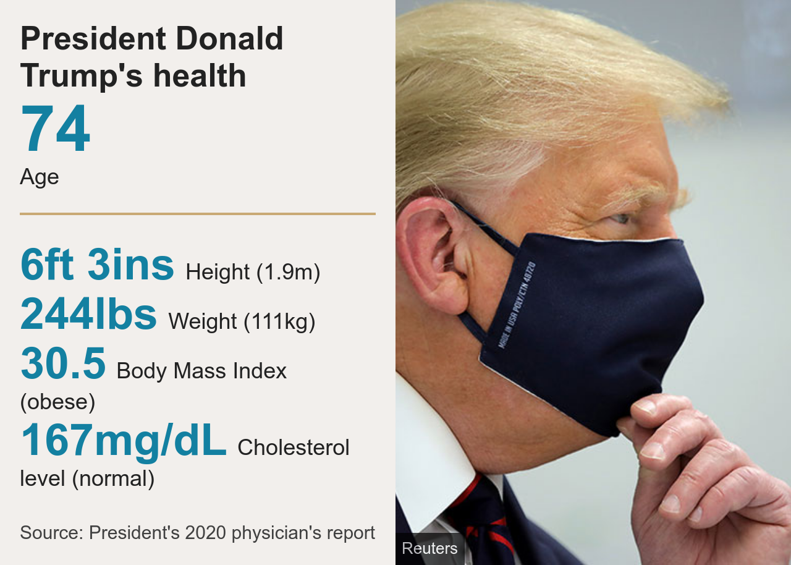

Trump Covid: US president has mild symptoms - White House
US election 2020US President Donald Trump has mild symptoms of Covid-19 after he and his wife Melania tested positive for the coronavirus, the White House says.
Mr Trump's chief of staff said the president was "on the job" and "in good spirits", but his physician also said he was "fatigued".
The news comes just over a month before presidential elections, where he will face Democratic challenger Joe Biden.
Mr Biden himself and his wife Jill tested negative on Friday.
"I hope this serves as a reminder," he tweeted after the result. "Wear a mask, keep social distance, and wash your hands."
The pair stood on stage together just days ago for a presidential debate.
Mr Biden's staff said he would travel to Michigan on Friday as planned for several campaign events. He and his wife have wished the presidential couple a speedy recovery.
- Latest updates
- What is the risk to Donald Trump's health?
- How will this affect US election?
- What older voters make of Trump Covid story
Officials said the process of tracking all the president's contacts in recent days was ongoing, adding that Mr Trump was considering how he might address the nation or otherwise communicate with the American people on Friday.
But he pulled out of a video conference call with vulnerable seniors scheduled for Friday, leaving Vice-President Mike Pence to chair the meeting.
On Thursday, the first couple said they intended to self-isolate after one of Mr Trump's closest aides, Hope Hicks, tested positive. Soon afterwards, they too received positive test results.
There has been criticism of Mr Trump's decision to go to a fundraiser attended by dozens of people in New Jersey on Thursday, apparently when officials already knew about Ms Hicks's symptoms.
Ms Hicks, 31, travelled with Mr Trump on Air Force One to the first presidential TV debate with Mr Biden in Ohio on Tuesday. Some of Mr Trump's family members who attended the debate were seen not wearing masks.
Mr Trump has mostly spurned mask-wearing and has often been pictured not socially distanced with aides or others during official engagements.
The coronavirus has infected more than 7.2 million Americans, killing more than 200,000 of them.
What do we know about Trump's condition?
White House Chief of Staff Mark Meadows said Mr Trump was experiencing mild symptoms and he was optimistic the president would make a speedy recovery.
He was on the job and would remain on the job, Mr Meadows added.
Mr Trump's physician Sean Conley said in a statement that the president had "as a precautionary measure received an 8g dose of Regeneron's polyclonal antibody cocktail", which is administered to help reduce virus levels and speed recovery.
He was also taking zinc, vitamin D, famotidine, melatonin and aspirin, Dr Conley said.
"As of this afternoon he remains fatigued but in good spirits," he added. The first lady was "well with only a mild cough and headache".
Earlier Mr Trump wrote on Twitter: "We will get through this together."
Melania Trump tweeted that she was looking forward to a speedy recovery.
"Thank you for the love you are sending our way. I have mild symptoms but overall feeling good," she said.
Mr Trump's physician, Dr Sean Conley, released a statement late on Thursday, saying the president and the first lady were "both well at this time, and they plan to remain at home within the White House during their convalescence".
White House Press Secretary Kayleigh McEnany - who spoke to reporters outside on Friday afternoon, but without a mask - said she "had no knowledge of Hope Hicks' positive test" before her previous briefing.
She added that White House officials had deemed it safe for Mr Trump to go to New Jersey, despite the news.

According to Mr Trump's most recent physical examination earlier this year, he weighed 244lbs (110.7kg). This is considered to be obese for his height of 6ft 3ins.
But Dr Conley stated at the time that the president "remains healthy". Mr Trump will also have the best medical care available.
America's Centers for Disease Control and Prevention (CDC) says a person must self-isolate for 10 days after a positive test.
- US shares set to drop after Trump tests positive
- How the world's media responded
- No, Trump did not call Covid-19 a 'hoax'
- Who is Hope Hicks?
It is not clear how Mr Trump's positive test will affect arrangements for the second presidential debate, which is scheduled for 15 October in Miami, Florida.
The Trump campaign issued a statement saying Mr Trump's campaign events would be temporarily postponed or turned virtual, but Mr Pence will continue campaigning as he tested negative.
Mr Trump is not the first world leader to have tested positive. Earlier this year, British Prime Minister Boris Johnson and Brazil's President Jair Bolsonaro were infected. They both have since recovered, although Mr Johnson had to receive regular oxygen treatment to help his breathing during hospitalisation.
Test results
So far, the vast majority of released test results have been negative. No-one can be sure who caught the virus first among these leading US political figures and their relatives, or who passed it to whom, or where they caught it.
Thursday
Hope Hicks, presidential aide - positive
Friday
President Donald Trump and First Lady Melania Trump - positive
Joe Biden, presidential candidate, and wife Jill Biden - negative
Mike Pence, vice-president, and wife Karen Pence - negative
Kamala Harris, vice-presidential candidate, and husband Douglas Emhoff - negative
Amy Coney Barrett, Supreme Court nominee - negative
Mike Pompeo, secretary of state - negative
Steve Mnuchin, treasury secretary - negative
William Barr, attorney general - negative
Ivanka Trump, president's daughter, and husband Jared Kushner - negative
Nancy Pelosi, House of Representatives speaker - negative
Subscribe to our Newsletter:
Go to most recent News →